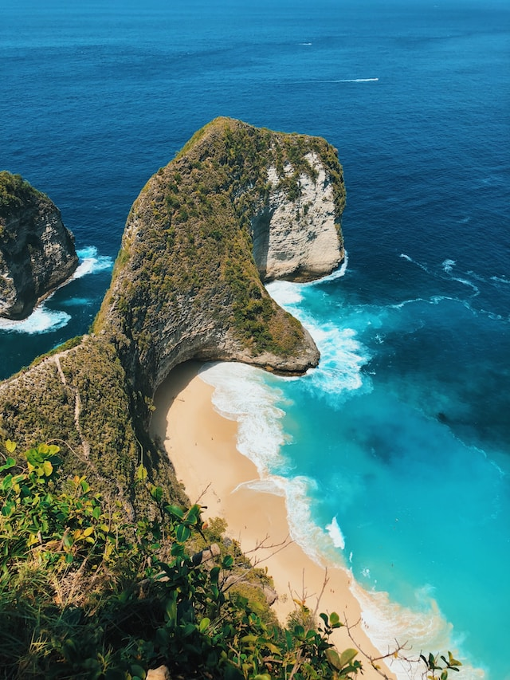
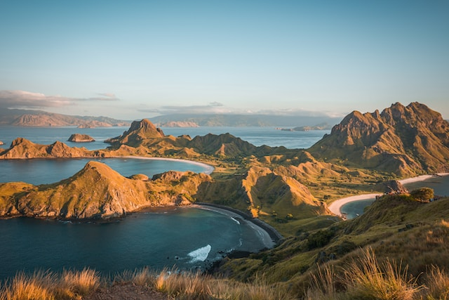
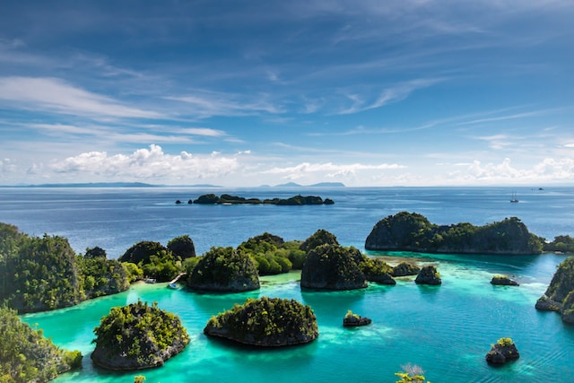

Bali
Bali is a popular tourist destination in Indonesia known for its stunning beaches, lush landscapes, and vibrant cultural heritage. It offers a diverse range of attractions including ancient temples, traditional arts, scenic rice terraces, and vibrant nightlife.
Komodo Island
Komodo Island is part of the Komodo National Park and home to the famous Komodo dragons, the world's largest lizards. Besides encountering these fascinating creatures, visitors can also enjoy pristine beaches, snorkeling, diving, and trekking in the island's rugged terrain.
Raja Ampat Islands
The Raja Ampat Islands, located in West Papua, are renowned for their extraordinary marine biodiversity and stunning natural beauty. This archipelago is a paradise for divers and snorkelers, offering vibrant coral reefs, diverse marine life, and breathtaking underwater landscapes.